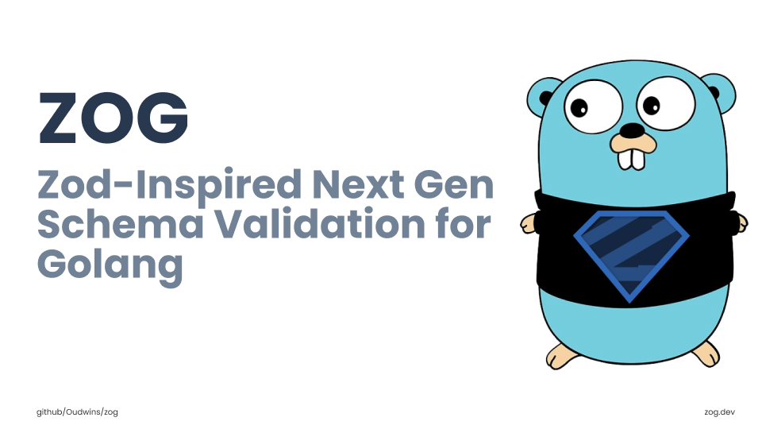

Zog 簡介
什麼是 Zog？

Zog 是一個 Golang 資料驗證、轉換工具，透過定義 資料結構(Schema) 以便於 運行時(Runtime) 進行值的解析、轉換與驗證。如果有在關注 TypeScript 生態圈，對 Zod 肯定不陌生，而 Zog 正是受 Zod 啟發，提供與 Zod 極為相似的 API，使用 方法鏈(Method chain) 來建置 Schema 進而保障 型別安全(Type-safe)。使用 Zog 可以更清楚直觀地驗證、轉換資料，是一套值得學習的 Schema Validation 套件。
為什麼選擇 Zog？
在 Golang 生態圈中，最廣泛使用的驗證套件為 go-playground/validator，其設計風格是 在 struct tag 加上驗證描述，下方為範例程式碼：
1 | type Todo struct { |
可以看到 Todo 這個 struct 有四個欄位，並且各有驗證規則：
Id：型別為string，是必填欄位且須符合 UUID 的格式。Title：型別為string，是必填欄位且最大長度不得超過20。Description：型別為string，是選填欄位且最大長度不得超過100。Completed：型別為bool，是選填欄位，利用 Golang 零值的特性使其預設值為false。
用 struct tag 雖然可以讓驗證規則與 struct 保持緊密關係，但因為它是 使用純字串的編寫方式，我個人認為在複雜的情境下 不利於閱讀與維護。若改用 Zog 的 Schema 風格來撰寫我個人認為可讀性與維護性上更勝一籌，那麼 Zog 該如何使用呢？就讓我們快速入門吧！
快速上手
首先，透過下方指令安裝套件：
1 | $ go get github.com/Oudwins/zog |
定義 Schema
安裝完以後，先根據上方 Todo 的例子來建立 Schema 與對應的 Todo struct，下方是範例程式碼：
1 | package main |
可以看到除了本身要定義的 Todo 以外，還額外宣告了一個 TodoSchema，透過 z.Struct 建立一個 StructSchema，用來將輸入值 解析(Parse) 到 struct 內，它的參數需使用 z.Shape 定義預期要 Parse 的 struct 結構為何以及各個欄位的驗證規則。以上方範例來說，預期輸入值會被 Parse 成 Todo，所以透過 z.Shape 定義了以下欄位與驗證規則：
Id：對應到Todo的Id，透過z.String()定義其型別必須是string，再透過UUID()定義其格式需符合 UUID 的規範，最後再透過Required()定義其為必填欄位。Title：對應到Todo的Title，透過z.String()定義其型別必須是string，再透過Max(20)定義其字串長度不得超過20，最後再透過Required()定義其為必填欄位。Description：對應到Todo的Description，透過z.String()定義其型別必須是string，再透過Max(100)定義其字串長度不得超過100，最後再透過Optional()定義其為選填欄位。Completed：對應到Todo的Completed，透過z.Bool()定義其型別必須是bool，再透過Default定義其預設值為false，最後再透過Optional()定義其為選填欄位。
⚠️ 注意：
z.Shape的欄位名稱需對應的是struct的欄位名稱，而不是輸入值的欄位名稱，簡單來說，Todo的Id欄位在z.Shape就會是Id。另外，Zog 有個很神奇的設計，就是z.Shape的欄位名稱 可以將字首轉為小寫，也就是id可以對應到struct的Id欄位，但這很可能 使開發者誤解 成：因為我輸入值是id，所以我這邊欄位的名稱是對應到輸入值的欄位名稱。為了避免產生誤解，我會建議避免利用這樣的機制來寫 Schema。
Parse
有了 Schema 後，就可以透過 Parse 功能來將輸入值 Parse 成 struct，並驗證其是否符合驗證規則。下方為範例程式碼，先宣告一個型別為 Todo 的變數 todo，其值目前為 nil，再透過 TodoSchema 的 Parse 將輸入值 raw 與 todo 指標傳入，如果在 Parse 過程中發生錯誤，會收到型別為 ZogIssueMap 的錯誤，反之，會將 Parse 成功的值指派到 todo。以下方範例來說，會將驗證成功後的值印出：
1 | // ... |
Parse JSON
假如輸入值是 JSON，欄位名稱經常會與 Golang 的 struct 欄位名稱不同，這時候可以搭配 Zog 內建的 zjson 套件來做初步的解析。在 struct 使用 json struct tag 即可告知 Zog JSON 內的欄位與 struct 欄位的對應關係。下方為範例程式碼，根據前面定義的 Todo struct，已經將各個欄位都加上 json struct tag，所以依照這些 tag 所指定的名稱來撰寫輸入值，並透過 zjson.Decode 搭配 bytes.NewReader 來解析該 JSON 資料，最後再將解析後的 JSON 帶入 TodoSchema.Parse 即可：
1 | import ( |
Validation
如果不需要 Parse 資料只需針對資料本身做規則 驗證(Validate)。下方是範例程式碼，透過 TodoSchema.Validate 針對輸入值 todo 進行驗證：
1 | // ... |
📖 補充：
Validate不是只有針對欄位內容進行驗證，如果有設定預設值，在面對該欄位沒有值的情況，會將預設值補上。
錯誤處理
前面的範例可以看到，會針對 ZogIssueMap 進行額外處理才將其印出，主要是 ZogIssueMap 是原始的錯誤訊息，如果要將錯誤訊息回傳給客戶端，暴露過多的內部資訊不是一個好選擇，所以 Zog 有提供 Issues.SanitizeMap 讓我們可以將關鍵錯誤訊息整理出來，進而提供給客戶端。下方是範例程式碼，我們刻意讓輸入值不符合 TodoSchema 格式：
1 | // ... |
此時就會印出整理後的錯誤訊息：
1 | Validation errors: map[$first:[must be a valid UUID] Id:[must be a valid UUID]] |
自訂錯誤訊息
如果內建的錯誤訊息不敷使用，Zog 也有提供方法讓開發者可以針對各種驗證規則設定自定義的錯誤訊息，只要在該驗證規則的函數內帶入 z.Message 並指定其內容即可。下方為範例程式碼，在 UUID() 內帶入 z.Message("should be UUID format.")，當 Id 不符合 UUID 格式時，就會以「should be UUID format.」當作錯誤訊息：
1 | // ... |
下方是出錯時印出的內容：
1 | Validation errors: map[$first:[should be UUID format.] Id:[should be UUID format.]] |
結論
Zog 相較於 Golang 生態中廣為使用的 go-playground/validator，使用更明確的 Schema 定義取代了結合在 struct 內的純字串驗證 struct tag，改善了程式碼的可讀性和可維護性，尤其是在複雜驗證需求下更為出色。
透過今天文章的介紹，可以快速了解 Zog 的主要使用方式，包括 Schema 的定義、資料的 Parse 與 Validate，以及如何處理錯誤訊息與自訂驗證錯誤提示。無論是從外部資料來源轉換成內部結構，還是純粹驗證既有的 Golang struct，Zog 都能提供高效且友善的解決方案。目前 Zog 並還沒有釋出 1.0.0 版本，也就是說，當前的版本並還沒有正式進入穩定階段，不過也不需太擔心，以目前的發展方向應該也不會有太多的 Breaking Change，整體來說，我還是認為 Zog 是一個值得深入了解並使用的資料解析與驗證方案，期待它後續的發展！